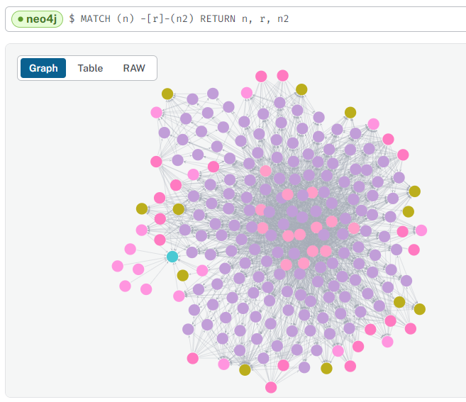

With accessible csv files, the final module of the ETL pipeline creates (or updates) nodes and relationships in the Neo4j instance.
There are two authentication requirements:
Google Drive to get node and relationship files and data.
Neo4j Aura instance is connected to with Keyring encrypted credentials.
The process automatically processes nodes and relationships based on files in the specified folders by using a file-pattern matching approach. However, this can be overridden within configuration, if desired.
Also in configuration is the option to create a database schema. There are three options:
No schema
Dynamic (default) - creates unique constraints based on nodes
Custom - allows the user to specify specific constraints prior to loading.
At this point, the ETL loads data on a row-by-row basis, reading the public csv files. Columns become properties with data types cross-referenced from a data-mapping dictionary in the configuration.
If there have been no errors - we should have data in our Neo4j Aura instance!

Loaded data for one programme - Artificial Intelligence